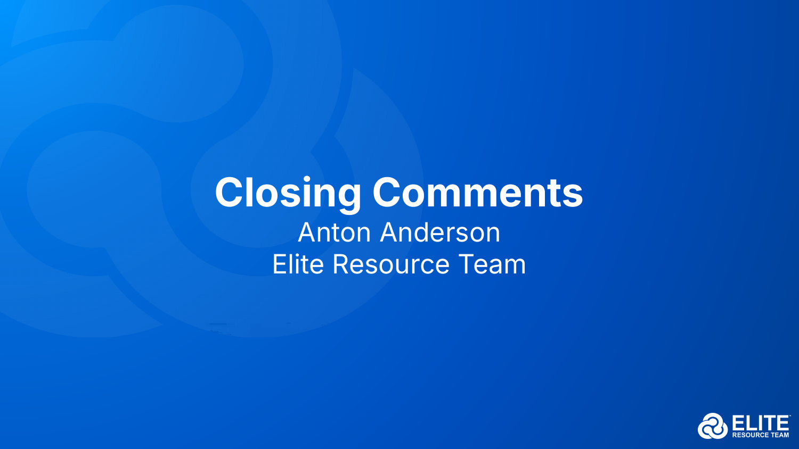

1 分水岭
机会 ≠ 结果，执行才是分水岭
这一整天，台上讲了很多"机会"：从交易到转化、AI 驱动的 VFO Portal、主动税务规划、事务所传承、风险保障。但 Anton 团队在收官时点破——机会本身不会自动变成客户的结果。真正拉开差距的，是把方法装进一套可重复的执行系统：会员制流程、专家协作、责任跟踪。
机会人人都看得见，结果只属于把它执行到底的人。
2 VFO 闭环
用好 VFO 模式：四方共赢的闭环
VFO（虚拟家族办公室）模式的本质，是围绕同一个客户，让会员（顾问/会计师）、客户、专家、VFO Services 四方协作、形成"WIN-WIN-WIN-WIN"。把一天的各讲串起来，正好是一条闭环：
- 定位——从交易走向转化，做客户的"引导者"（见《从交易到转化》）。
- 获客与深化——用主动税务规划打开高价值对话（见《如何销售税务规划》）。
- 交付与协作——调动专家网络落地策略：保险/保费融资、慈善规划、合格计划等。
- 守护与传承——为客户与事务所自身做风险保障与传承规划。
- 系统与责任——用 VFO Portal 与流程把进度、责任、结果可视化。

Key Takeaways
收官三句话
- 执行 > 灵感——把"机会"装进可重复的流程，才会变成客户结果。
- 四方共赢——VFO 的力量来自会员、客户、专家、VFO Services 的协作闭环。
- 系统放大人——用 Portal 与责任跟踪，把个人判断规模化、可持续化。